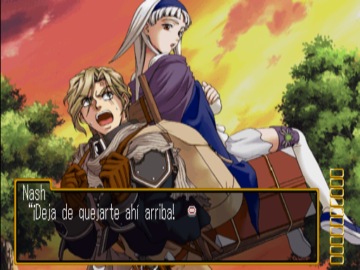
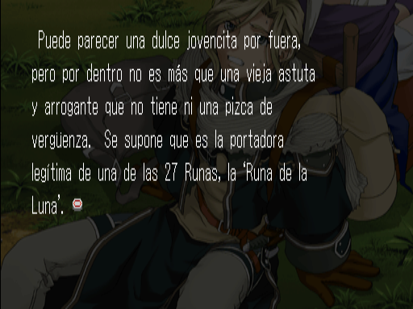
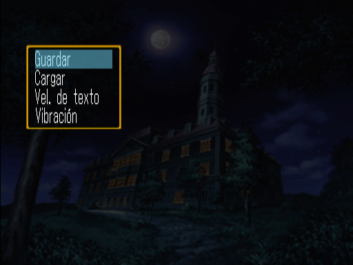

PlayStation · Konami · 2000
Vol.1 · El espadachín de Harmonia
Traducción al español
Proyecto de traducción al Español por Fveralv.



Estado
⚠ Versión 1.0. Toda la historia, los menús y la pantalla de título están en español y el juego se puede jugar de principio a fin. Solo falta la ayuda en pantalla de la galería de imágenes. Si encuentras un texto cortado o un fallo, abre una issue con una captura.
Progreso general del proyecto
Por secciones
| Sección | Estado |
|---|---|
| Historia: los 4 capítulos (58 escenas, 8.858 líneas) | Traducido |
| Fuente con á é í ó ú ü ñ ¿ ¡ y mayúsculas acentuadas | Hecho |
| Menús, guardado, tarjeta de memoria, opciones e importación de Suikoden II | Traducido |
| Pantalla de título: «PULSA START», menú y subtítulo | Traducido |
| Tarjetas de episodio («Episodio 1 『El visitante』»...) | Traducido |
| Ayuda de la galería de imágenes (NEXT / BACK / CG OPEN...) | Pendiente |
| Pruebas completas en juego | En curso |
Descarga
⬇ Parche: próximamente
Repositorio
El parche solo contiene las diferencias con el disco. No incluye el juego: necesitas tu propia copia.
¿Te gusta lo que hago? Si crees que mi trabajo merece la pena, puedes apoyarme invitándome a un café. ¡Cualquier aporte me ayuda a seguir creando! ☕
Cómo aplicarlo
- Parte de tu imagen de Gensou Suiko Gaiden Vol.1 (Japón, SLPM-866.37) con el parche inglés ya aplicado, en formato
.bin/.cue(RAW, no.iso). - Haz una copia de seguridad del
.bin. - Aplica
Suikogaiden_ES.v1.1.ppfsobre ese.bincon un aplicador de PPF (PPF-O-Matic o MultiPatch). El aplicador comprueba que el disco es la versión correcta. - Si el
.binnuevo tiene otro nombre, edita la líneaFILEdel.cuepara que coincida y carga el.cueen tu emulador.
Comprueba antes que tu imagen con el parche inglés es la correcta:
| MD5 | 9D00210D9165104875F34B145E2DD00A |
| SHA-1 | EA120F3D3AB86798DBB089122DF5790DC09EDE35 |
| Resultado | 74AFA0937BE0527E2A3F0C4E30B9367C4B4392B1 (SHA-1 ya traducido) |
Notas
- La traducción parte de la versión inglesa de la comunidad. Los nombres de personajes y lugares se mantienen (Nash, Sierra, Harmonia, Jowston...).
- La fuente del juego no tenía tildes ni eñes: se han dibujado á é í ó ú ü ñ ¿ ¡ y las mayúsculas acentuadas en huecos libres de la fuente.
- Algunas frases van algo reformuladas para caber en el ancho del cuadro de diálogo.
- La ayuda en pantalla de la galería de imágenes es una imagen y sigue en inglés.
- Si encuentras un texto cortado, que se sale del cuadro o un símbolo raro, abre una incidencia en el repositorio indicando dónde estabas y la frase exacta.